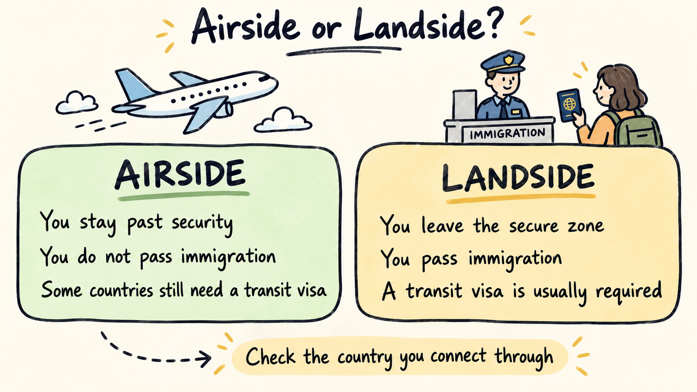

Do You Need a Transit Visa for a Layover?
Travel Document Vault
Key Takeaways
- Not every connecting flight requires a transit visa. Many depend on whether you stay airside (in the international transit zone) or leave the airport.
- Your passport's nationality matters significantly - one country may require a transit visa from some travellers while exempting others entirely.
- The Schengen Airport Transit Visa (ATV) applies only to certain non-EU nationalities; many are exempt.
- Airside-only layovers are often visa-free, while layovers where you leave the airport or pass through immigration nearly always require a visa.
- If you realise you need a transit visa after booking, contact your airline immediately - processing times vary widely and you may need to rebook.
- Store and track every document - your transit visa has its own expiry date separate from your passport and main entry visa.
Whether a connecting flight requires a transit visa depends on three things: which passport you hold, which country your plane lands in, and whether you leave the airport or stay in the international transit zone. Most layovers need no transit visa at all. But the requirement, where it exists, is firm - and airlines check at the gate.
Transit visas are the document that catches even careful travellers out, because they sit apart from everything else in your file. Your passport's validity does not affect them, and your destination's entry visa does not substitute for them either: they exist purely because of where your plane happens to land to refuel. Yet many travellers never check whether they need one until it is far too late.
Airside Transit Often Needs No Visa, but Landside Means Clearing Immigration
Whether you need a visa often comes down to one distinction: airside versus landside. Most countries grant visa-free or visa-exempt transit on one side of that line but not the other.
Airside transit means you remain inside the airport's international transit area after landing, without passing through immigration control or customs. You can walk through duty-free shops, sit in the transit lounge, and use the airport's facilities, but you never technically enter the country. From there, you go directly from your arriving flight to your departing flight through secured corridors and gates.
Landside transit means you exit the airport proper, typically because you need to leave the airport, stay overnight, or transfer to a different airport. This requires passing through immigration and technically entering the country, even though your intent is only to transit through.
Most countries do not require a transit visa for airside-only transit, particularly for short layovers. Landside transit is treated the same as entering the country to stay, and generally requires a visa if you do not hold citizenship or an exemption.
The trap sits in the middle. A layover that looks airside on paper can quietly become landside in practice. If your connection runs overnight, the airport hotel usually sits outside the secure zone, so collecting your bags and checking in means clearing immigration. The same thing happens when you have to switch terminals and there is no airside link between them - you exit, then re-enter security on the far side. Either way, a connection you assumed needed no visa can suddenly need one, so it pays to check how the transfer actually works, not only how long it lasts.

When You Definitely Need a Transit Visa
Transit visas are mandatory in several circumstances, and the requirements vary significantly by your nationality and the transit country.
The Schengen Airport Transit Visa (ATV) applies to certain non-EU passport holders making airside-only connections through any Schengen airport, though many nationalities are exempt - including EU, EEA, UK, US, Canadian, Australian, and several others. Because the exemption list is complex and changes periodically, you cannot assume you are exempt. The IATA Travel Centre database holds the current rules for your specific nationality and destination, so check there rather than guessing based on what you know about other countries.
The United Kingdom offers visa-free airside transit for many, but others require what is now called a Direct Airside Transit Visa (DATV). Like Schengen, exemption depends on your nationality, not just your destination.
The United States does not offer a true international transit zone, so you must clear immigration and customs on arrival, regardless of where you boarded. This means even a two-hour connection requires entry to the country and handling of your baggage through US immigration, even if your bags are nominally checked through to your final destination. In practice, this comes down to US entry rules rather than transit visa rules, so it's worth building into your travel plan from the start.
Plenty of other countries run their own transit visa systems, and the complexity varies. Some require one only if your airside transit runs past a certain duration, while others waive it altogether for nationalities covered by bilateral agreements.
Travel Document Vault lets you store and track travel documents, including transit visas with their own expiry dates. Scan your transit visa alongside your passport and main entry visa, confirm or enter each expiry date, and reminders start automatically. Download on the App Store and Google Play.
Nationality Changes Everything
Two people connecting through the exact same airport, on the exact same day, can face entirely different transit visa rules, because the deciding factor is which passport each of them holds, not the route they are flying. A single airport may require a transit visa from holders of certain passports and grant visa-free airside transit to holders of others. This applies even to similar nationalities within the same region: travellers from different countries on the same continent may face entirely different requirements for the identical connection.
This is why the IATA Travel Centre (the same database airlines use at the gate) is the only reliable source: you enter your nationality and your destination, and it tells you the exact requirement for that combination. Never assume you know based on what another traveller experienced or what you remember from a previous trip.
If You Discover You Need a Visa After Booking, Call Your Airline First
It happens more often than you would think: you book the flights, then realise the layover needs a transit visa you do not have. When that happens, treat it as urgent, because processing times vary enormously, from same-day to several weeks depending on the country and the time of year.
Start with your airline, since they may know about processing times and sometimes have experience with common routes. Then contact the nearest embassy or consulate of the transit country to find out how long the visa itself will take. Many consulates offer expedited processing for travel emergencies, though you may need to pay an extra fee.
If processing time is impossible before your departure date, you have three options: rebook your flights to avoid the transit country entirely, rebook through a different hub, or delay your trip. Trying to board without the required visa will result in missed flights and potential complications with your airline, so book the new routing the moment you spot the problem, rather than wait and hope the paperwork clears in time.
How to Check Before You Book
Do this as soon as you know your full routing, not just your destination, but every country your plane lands in. Use the IATA Travel Centre with your nationality, your destination country, and each transit country to confirm the requirement. When the tool flags a transit visa, note two things beyond the fact that you need one: how you apply, since some are issued online while others mean a trip to a consulate, and how long the visa stays valid, because a transit visa often covers a narrow window rather than an open period. Getting both wrong is how people end up holding a document that has lapsed by the time they fly.
Add any transit visas you need to your planning timeline alongside your main entry visa. Some take weeks; you need that information before you book the flights. Keep the confirmation with your other travel documents so it is to hand at the gate, where it is the airline, not the border, that checks it first.
If you are travelling as a family, check every family member's passport individually.
A single person without an exemption can derail the entire trip.
Before you book, put your whole route, not just the destination, through the IATA Travel Centre. That's the check most likely to catch a missing requirement while you can still change the booking.
Frequently Asked Questions
Do I need a visa for a 2-hour layover?
It depends on whether you leave the airport during the layover. If you stay in the airport's international transit area, many countries do not require a visa. If you step outside the secure zone or plan to leave the airport, you may need a transit visa even for a brief stop.
What is the difference between airside and landside transit?
Airside transit means you remain in the secure international zone of the airport and do not pass through immigration or leave the airport complex. Landside transit means you exit the airport or pass through the country's immigration control. Most countries do not require a transit visa for airside-only transit.
Does my nationality affect whether I need a transit visa?
Yes, significantly. A single country may require a transit visa from holders of some passports while exempting others under bilateral agreements or reciprocal arrangements. Always check the specific requirement for your nationality and destination, not just the destination country alone.
Do I need a Schengen transit visa?
The Schengen Airport Transit Visa (ATV) is required for airside-only transit through Schengen airports if you hold certain non-EU passports. However, many nationalities are exempt. Check the IATA Travel Centre or your airline before booking - exemption rules are complex and country-specific.
What should I do if I realise I need a transit visa after booking my flight?
Contact your airline immediately and check the processing time for a transit visa from your country. Transit visa applications often process faster than regular visas, but timelines vary. If there is insufficient time before your trip, you may need to rebook your flights to avoid the transit country entirely or change your routing.
How long is a transit visa valid for?
Transit visa validity varies by country. Some are valid for 48 hours from entry, others for several days. The duration typically depends on your onward flight time and your passport's remaining validity. Store and track your transit visa expiry date alongside your passport and main entry visa.